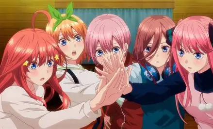
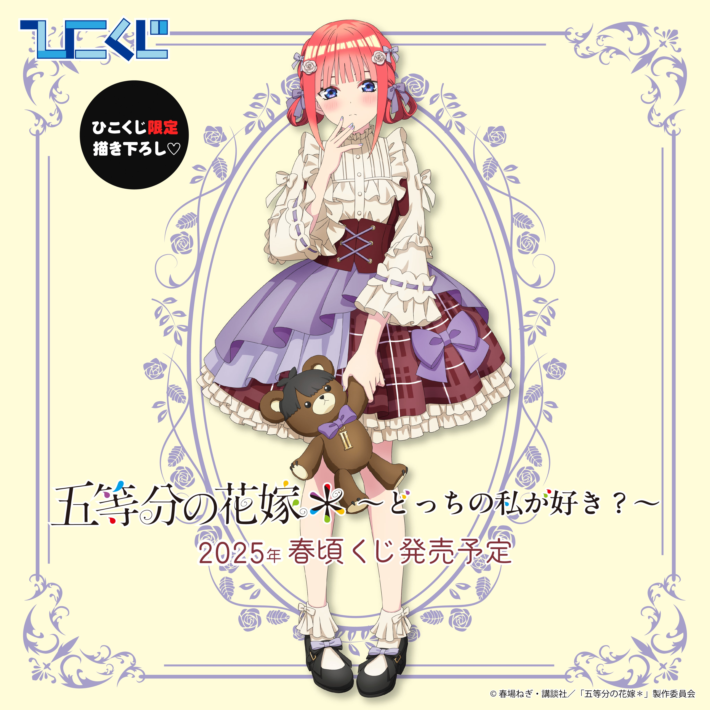
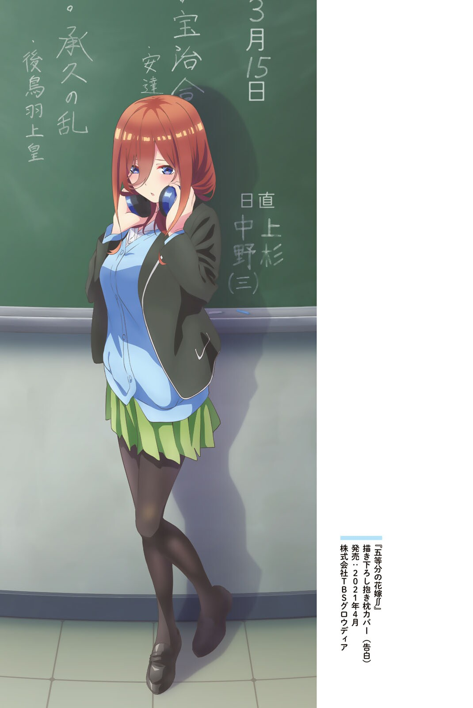
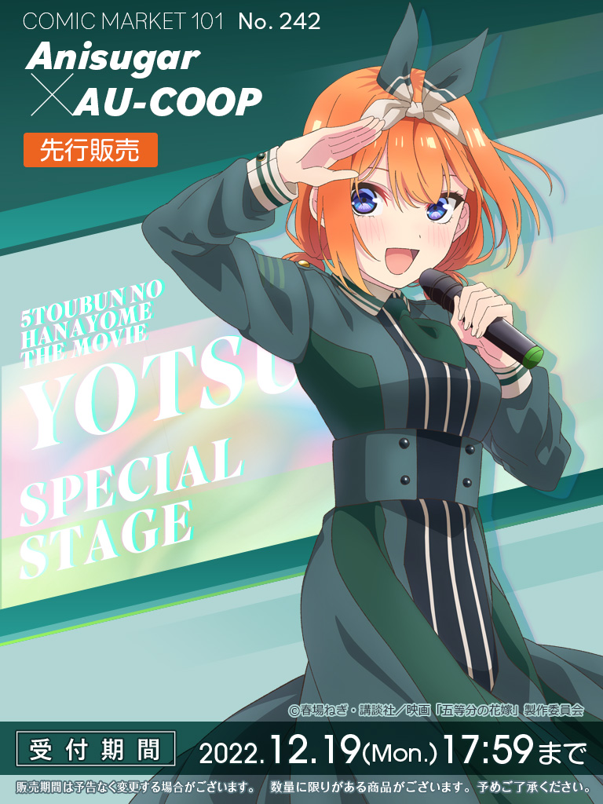
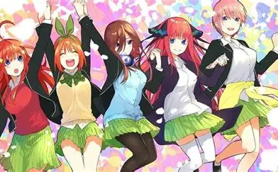

Хто з сестер найкраща?

Одне з найпопулярніших питань серед фанатів «П’яти наречених» — хто ж насправді найкраща сестра. Кожна з них має своїх відданих прихильників.
Ічіка подобається тим, хто цінує спокій і турботу. Ніно — вибір тих, кому подобаються яскраві й емоційні персонажі. Міку підкорює своєю скромністю і відданістю. Йоцуба дарує позитив і енергію. А Іцукі подобається своєю серйозністю і принциповістю.
Однозначної відповіді немає — і в цьому головний шарм історії. Кожен знаходить у сестрах щось своє.
Чому Ніно так сильно змінюється

Ніно Накано — один з найяскравіших прикладів розвитку персонажа в аніме. На початку вона відкрито показує свою неприязнь до Футаро і навіть намагається його прогнати.
З часом ми бачимо, як вона починає помічати його зусилля, цінувати допомогу і поступово відкривається. Її шлях від різкого відторгнення до щирих почуттів виглядає дуже природно і зворушливо.
Саме тому багато хто вважає арку Ніно однією з найсильніших у всьому аніме.
Міку і її любов до історії

Міку — тиха дівчина, яка знаходить натхнення в історичних постатях. Її захоплення полководцями — це не просто хобі, а спосіб знайти опору і приклади сили характеру.
Через ці інтереси вона вчиться бути сміливішою і чеснішою зі своїми почуттями. Саме тому її історія здається особливо глибокою і проникливою.
Йоцуба — посмішка, за якою ховається біль

Йоцуба завжди весела, енергійна і готова підняти настрій іншим. Але з часом стає зрозуміло, що за цією посмішкою часто ховаються власні переживання і невпевненість.
Вона звикла ставити інших вище за себе. Саме ця риса робить її одночасно найсвітлішим і одним з найтрагічніших персонажів історії.
Чому ця історія чіпляє

«П’ять наречених» — це не просто романтична комедія. Це розповідь про сім’ю, відповідальність, особистісний ріст і складність вибору.
Кожна сестра проходить свій шлях. Футаро теж змінюється. І саме тому історія залишається в пам’яті навіть після фінальних титрів.
А суперечки фанатів про те, хто мав опинитися з головним героєм, тільки підтверджують, наскільки добре прописані всі персонажі.